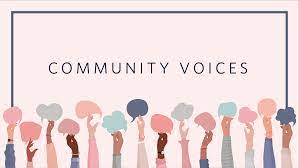
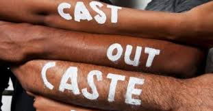
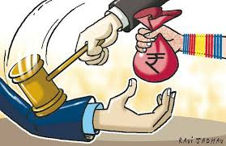
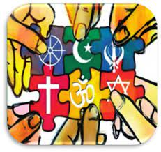
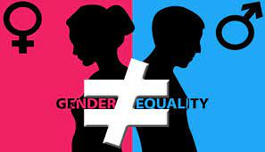

Community Voice
A local community is defined as a group of people living in a common area in which intent, resources, needs, and risks are shared. Being part of these groups promotes kinship and provides more space to connect with others. Due to these shared factors, the members often have a common language, beliefs, and stories that they pass throughout ages. A strong local community makes its members more active and pushes each one to work toward a common goal, which is progress.
Since these groups are composed of people with various backgrounds, problems are inevitable. Issues may start from families and further grow as a community matter. It is crucial to solve each problem to avoid a bigger uproar.

Major Community Issue
- Casteism
The rigid caste system in India, passed down through generations, continues to impact social position, occupation, and lifestyle. Affirmative action programs have been implemented to uplift historically underprivileged populations, but challenges persist

- Dowry System
The dowry system involves the bride’s family providing cash, property, or gifts to the groom’s family as a condition of marriage. Despite legal reforms, dowry-related issues persist, affecting families across India

- Communalism
India’s religious and cultural diversity sometimes leads to communal tensions. Addressing these divisions is crucial for fostering harmony and understanding among different communities

- Gender-Based Discrimination
India’s gender gap is a significant barrier to equality. Gender-based discrimination is a major problem facing India, and it is being addressed by the government

- Drugs Addiction
Substance abuse, especially among youth, poses serious health and social challenges. Addressing addiction requires comprehensive strategies, including prevention, treatment, and rehabilitation
CORPORATE COLLABORATION
Tula’s Institute is the only college in Uttarakhand which have strategic tie-ups with some of the world class companies like Redhat, Microsoft. Bentley, D-Link etc… to offer study programs that would help the students and faculty gain an international perspective in their chosen field of study.
We are enabling host of long-term benefits for the overall development of students and to enhance their career opportunities too.
- Microsoft innovation center (MIC)
- Redhat
- Autodesk club
- India’s first Remote Robotics lab in association with APS Labs Aachen, Germany.
- D- Link academy
- Bentley Lab
- TedX Delhi
ACADEMIC TIE-UPS AND CHAPTERS
Academic collaborations can help you meet your career goals if approached right. Tula’s the best private engineering college in Uttarakhand has established academic Tie ups with various international institutions. The aim is to establish mutual co-operation to develop academic and cultural exchange to offer best knowledge to our students.
- Virtual Labs in association with IIT Roorkee.
- Collaboration with IIT Bombay on spoken tutorial project-FOSS.
- Institute has IEEE student chapter.
- Institute has ACM student chapter.
- Institute has Power and Engineering Society (PES)
- Institute has BJMC Public Relation Society of India (PRSI)
- Institute has International Association of Students in Agriculture and Related Sciences (IAAS)